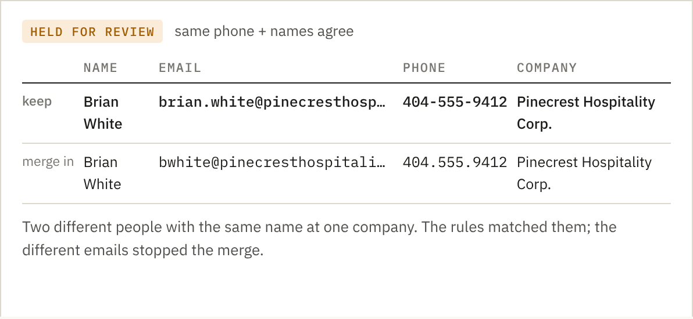
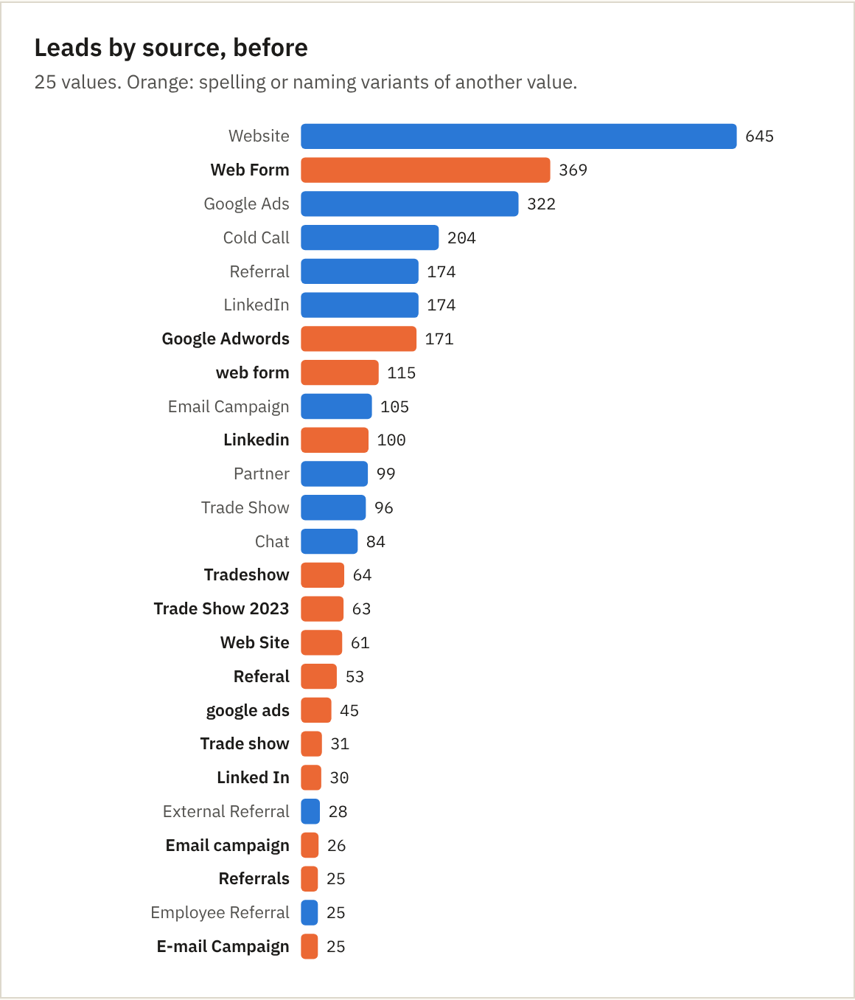
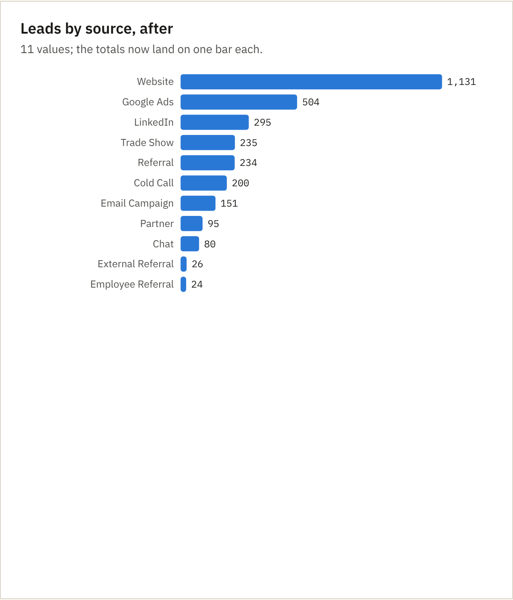
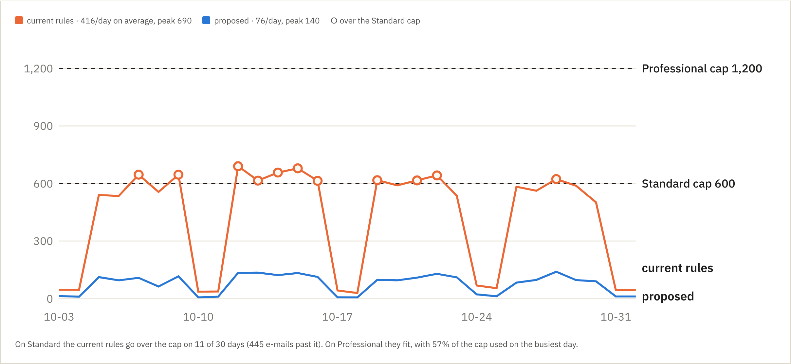

One measured run · fictional sample org · Zoho CRM v8 API
Brightwater Supply Co. is invented: 5,776 records, 7 users (one deactivated), 16 workflow rules, Professional edition. Problems were planted on purpose so the results can be scored. The kit read the org, wrote a plan, and applied it through the API.
| Before | After | Finding | |
|---|---|---|---|
| high | 461 | 0 ✓ | Records owned by deactivated users |
| high | 190 | 31 | Duplicate leads |
| high | 42 | 9 | Duplicate contacts |
| high | 12 | 0 ✓ | Lead Source split across spelling variants |
| medium | 5,880 | 0 ✓ | Phone numbers in mixed formats |
| medium | 17 | 0 ✓ | Deals in stages that are no longer in the pipeline |
| high | 136 | 136 | Open deals past their closing date |
| medium | 108 | 108 | Leads that are already contacts |
| high | 2 | 2 | Rules that email on every single edit |
| high | 1 | 1 | Active workflow rules that do the same thing twice |
| medium | 5 | 5 | Custom fields filled on under 2% of records |
Overdue deals and leads-that-are-contacts are flagged for the owners, not changed: those need a person.
Rules: same personal email; or same phone and names that agree; or same company and names that agree. A shared switchboard never counts. When two personal emails disagree, the group waits for a person: all 9 wrong pairs (namesakes at one company) were stopped there.



Workflows
The sample's rules replayed against 30 days of activity. Two rules that mail on every edit plus one rule copied twice send most of the volume: on Standard (100 per licence) that goes over the cap on 11 of 30 days. The proposed set averages 76 a day.

| Std | Pro | Ent | |
|---|---|---|---|
| Custom fields / module | 10 | 155 | 300 |
| Page layouts / module | — | 1 | 3 |
| Active rules / module | 15 | 40 | 75 |
| Workflow e-mails / licence / day | 100 | 200 | 500 |
| Validation rules / layout | — | 5 | 10 |
| Unique fields / module | 2 | 2 | 2 |
| Blueprints | — | 3 | 50 |
Zoho feature comparison, November 2026. — = not available.
How it runs
Documentation
Every field with type and fill rate, the pipeline, every workflow rule with trigger, criteria and actions, and a log of applied changes, regenerated after each change. Settings the API should not touch become a 15-step checklist with where to find each one: removing picklist options, retiring 5 near-empty fields after export, switching off the noisy and duplicate rules, Email duplicate check on web forms, an assignment rule for new leads, a required loss reason.
Checked: tests 17, pass 17, fail 0, covering matching, picklists, credit maths, paging past 2,000 records, API limits, apply and rollback.